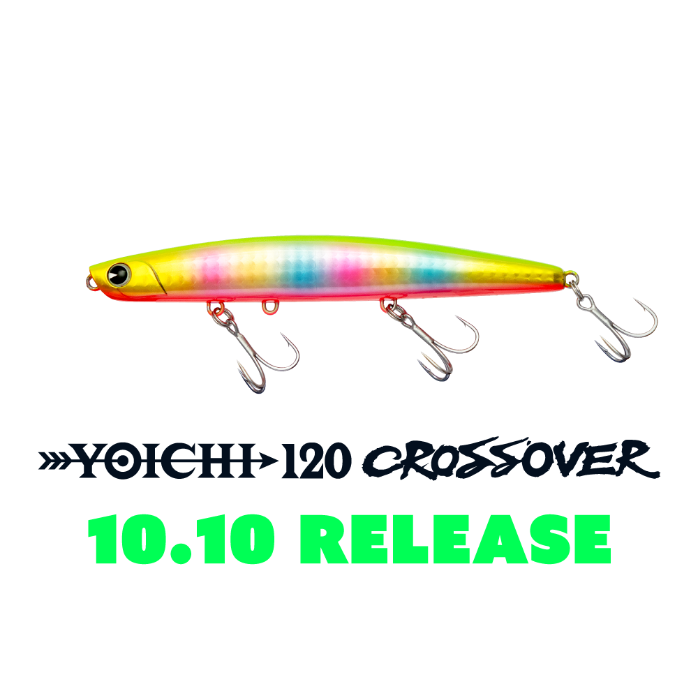
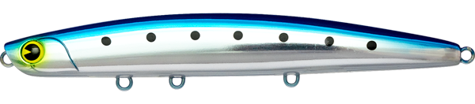
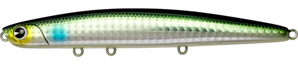
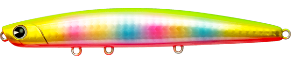
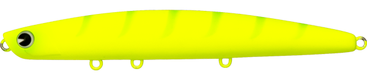

ヨイチ120 クロスオーバー
（YOICHI 120 CROSSOVER）
ヨイチ120 クロスオーバー（YOICHI 120 CROSSOVER）はアイマ（ima）のシンキングミノーです。
ヨイチシリーズのスリムボディと遠投性能を継承しつつ、スラロームアクションとスペアフックハンガーによる2フック切替対応でクロスオーバーを図った1本。サーフ・河口・磯と幅広いフィールドをカバーできるのが魅力です。

画像出典:ima公式HP
スペック
- メーカー
- アイマ（ima）
- タイプ
- シンキングミノー
- 全長
- 120mm
- 自重
- 40g
- フック
- #6（スペアフックハンガー搭載／2フック仕様時は#3推奨）
- リング
- #3
- レンジ
- 20〜80cm
- アクション
- スラローム
- ターゲット
- シーバス・ヒラメ
- 発売
- 2026年10月10日
▼今すぐチェック

ヨイチ120 クロスオーバーの特徴
スリムボディの遠投性能と、状況に応じたセッティング変更力を両立した1本
-
スリムボディが生む遠投性能
ヨイチシリーズのスリムボディを採用し、空気抵抗を抑えた飛行姿勢で遠投性能を確保。サーフや磯から沖のポイントまで届かせたい場面で頼れる。
-
見切らせないスラロームアクション
ただ巻きで左右にブレながら進むスラロームアクションを採用。直線的な動きに見切ってくるシーバス・ヒラメにも違和感を与えにくい。
-
スペアフックハンガーで2フック仕様に切替可能
スペアフックハンガーを搭載し、標準仕様から2フック仕様（推奨フック#3）へ変更できる。エリアや対象魚のサイズに応じてセッティングを変えられる柔軟性が魅力。
ヨイチ120 クロスオーバーの使い方
基本はただ巻き。スラロームアクションを活かし、一定速度のリトリーブで左右の揺れを安定させながら通すのが基本の組み立てです。
レンジは20〜80cmとやや広めにカバーできるため、表層付近で反応がなければリトリーブスピードを落としてレンジを入れ直すなど、1本でレンジを変えながらサーチできる。ヒラメを意識する場面では、着底後にリフト&フォールを織り交ぜるのも効果的です。
ヨイチ120 クロスオーバーの得意な状況
サーフ・河口・磯といった、遠投が必要な開けたフィールドが最大の出番。
スリムボディの飛行性能を活かして沖のブレイクやヨレまで届かせたいシーバスゲームや、ボトム付近をスラロームで探りたいヒラメゲームにも対応しやすい。状況に応じてフック仕様を変えたい場面でも選びたい1本です。
ワンポイント
大型のヒラメやシーバスを想定するフィールドでは、スペアフックハンガーで2フック仕様（#3）に変更すると、やり取り中のバランスが安定しやすくなります。
反応が渋い時は、リトリーブ速度を一段落としてスラロームの振れ幅を大きくすると、見切られにくくなります。
オススメカラー
ヨイチ120 クロスオーバーは全12色展開。フィールドに合わせやすいオススメカラーを厳選して紹介します。

ウミベイト海のベイトパターンを意識したナチュラル系カラー。サーフ・磯で使いやすい定番色。

カワベイト河口域のベイトパターンにマッチするカラー。汽水域での使用に向いている。

玉彩弐強いフラッシングでアピール力を重視したい濁り潮・マズメ時向けのカラー。

マットチャートギーゴローライト時や濁り潮でも視認性を確保できる高アピールカラー。
画像出典:ima公式HP
ヨイチ120 クロスオーバーに似ているルアー
-
 ジグザグベイト120S
ポジドライブガレージ
詳細はこちら＞
ジグザグベイト120S
ポジドライブガレージ
詳細はこちら＞
全長120mm・自重43gの対ランカー型シンキングスイムベイト。同じ120mm・40g台のシンキングで、遠投して河口などのシーバスを狙う使いどころがヨイチ120 クロスオーバーと近い。
-
 バンク120S
ポップシークルー
詳細はこちら＞
バンク120S
ポップシークルー
詳細はこちら＞
全長120mm・自重46gのリップ付きシンキングペンシル。同じ120mmクラスで、スラロームアクションとレンジキープ力を持つ遠投系という点がヨイチ120 クロスオーバーと重なる1本。